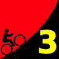
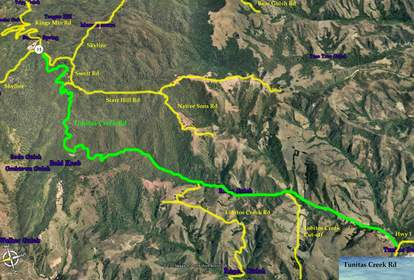
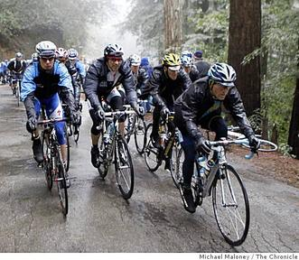

{kind=link}

|  |
2009 Low-Key Hillclimbs Week 3: Tunitas Creek-Star Hill-Swett 17 Oct 2009 |
| Warning: This is the weekend of the infamous Half Moon Bay Pumpkin Festival, and so traffic on Highway 92 will be very heavy all day. Therefore alternate routes to the start are recommended. |
|  |
| Aerial photo of Tunitas Creek-Star Hill-Swett, courtesy of Stanford Cycling |
|
This year Low-Key celebrates the opening of Bike Hut on Tunitas Creek Road with this return to a climb we did for the only time back in 1997. Tunitas Creek is famous for its dense redwoods. The road first steeply parallels the creek of the same name, climbing steeply on road paved just in time for the passage of the Tour of California this past February, before breaking free for the gentler climb on rougher pavement to the summit.
Gentler climbs, however, aren't what Low-Key has in mind. Instead we turn right onto Star Hill Road, a residential road precariously perched on the steep hillside, stilted houses finely balanced in contempt of seismic fates. Don't get too relaxed here, though, because just before Star Hill plunges down the westward slope, we'll continue to climb eastward, up Swett Road. Swett begins, err, rudely, but soon moderates itself, eventually passing the Kings Mountain Elem School on the right, joining Skyline Blvd not long after.
Be careful on Swett... remember Low-Key is traffic, and cars cresting the steep descent of Swett don't have a good sight line. So make sure to keep right here.
Our insurance demands it: helmets are required. Sorry kids, no exceptions!
USA Cycling rules do not allow ear plugs. We don't think it's a good idea either. So for safety sake, please leave both ears open during all Low-Key events!
Trailers pulling boom boxes are fine, however.
|  |
We'll meet at Bike Hut on Tunitas Creek Road, a red hut around a mile from the intersection of Tunitas Creek Road and Highway 1. After holding registration there, we're ride as a group to the base of the climb, at the intersection of Tunitas Creek Road and Lobitas Creek Cut-off. Then we'll regroup and start the climb!
There are many parking options for riders. For those living on the Peninsula east of the ridge, a good one is to park on Skylonda and ride down to the start: you'll get a solid warm-up then be close to your car at the finish. Another option is to park in San Gregorio, then ride Stage Road to Highway 1 to Tunitas Creek. Finally, there may be some parking along Tunitas Creek Road.
But whatever you do, what you do not want to do is plan on zipping over Highway 92 at the last moment. For some reason, thousands of people drive their vehicles over the hill this weekend to look at big squash. Amazing what people who don't ride do to occupy their time. So the better approach is likely to ride down Tunitas to reach the start. It's virtually as fast as driving down, and you'll avoid a longer drive home at the end of the day.
Bike Hut has snacks and water for a small fee if you want a bit of fueling before the climb. As always, we'll have food and drink at the finish.
| stats | 7.62 miles, 2176 feet, 5.4% |
| format | mass start |
| time | reg 9:15 - 10:00 start 10:10am |
| coordinator | |
| aerial view | Stanford Cycling (overview) Stanford Cycling (upper) |
| route profile | Motionbased profile |
| weather | Weather Underground Weather Bonk |
| registration form |
PDF release form |
| entry fee | $10 voluntary donation free for juniors 2 free for volunteers free for coordinators |

{kind=link}
{kind=link}